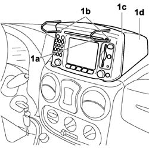
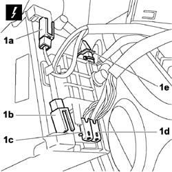
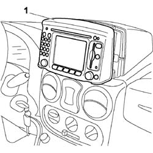

5580M14 positionable navigation system panel - r r
- Path
- Procedures > 55 ELECTRICAL EQUIPMENT > 5580 SPECIAL ACCESSORIES > 5580M om-board navigator > 5580M14 positionable navigation system panel - r r
- Kind
- repair procedure (removal / refitting; the operation number is the code)
- Applies to
- all engines; all production periods
- Interactive page
- https://sloeber94.github.io/elrnDB-fDbl/en/#/2584977
Applies to: all engines; production: da 12/03
 Removing
Removing
 Refitting
RefittingDisconnect the battery leads.
1. Insert extractors (1a) available as part number 46515517 into the holes (1b) and separate the on-board navigator panel (1c) from mount (1d).

Applies to: all engines; production: da 12/03
1. Disconnect the electrical connectors (1a), (1b), (1c), (1d), (1e).

Applies to: all engines; production: da 12/03
1. Remove the vehicle on-board navigation system panel.

Applies to: all engines; production: da 12/03
Refitting
RemovingPosition the on-board navigation system panel near the seat.
Connect the electrical connections.
Insert the on-board navigation system in its seat.
Connect the battery leads.